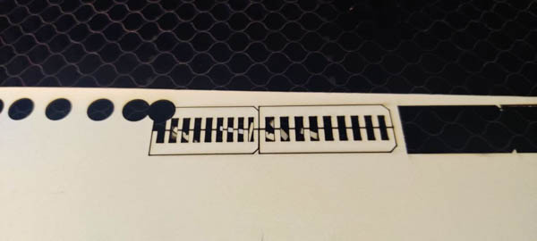
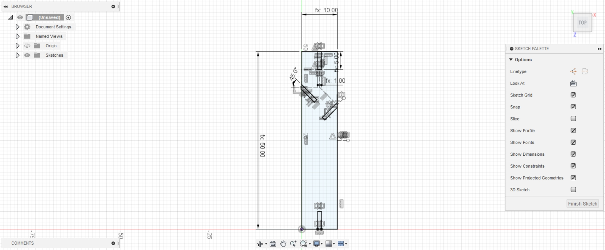
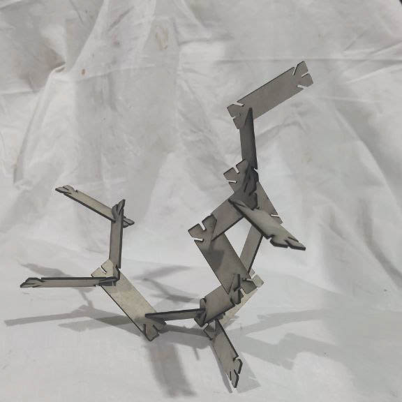
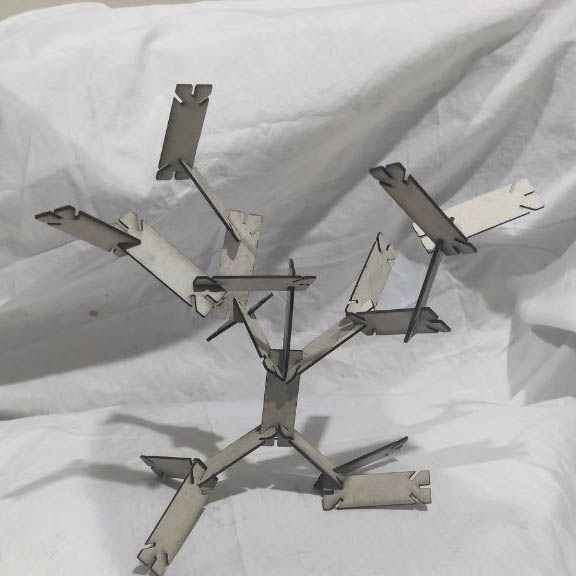

Computer Controlled cutting
The lasercutter is one of my favourite tools in the fablab. I am not so familiar with the one at the RIIDL Fablab, but in the past years I have used others at a different makerspace as well as at my previous workplace extensively.
So this is as good an excuse as any to get to know the RIIDL lasercutter better.
Lasercutter characteristics
Points to test :
- focus
- power x speed settings for select materials
- kerf
- joints and joint clearance
Focus : Everyone around is using 6 mm as a nominal value and thumb rule - sometimes literally (pic of measuring by thumb). From experience, I know that the zone of focus is rather forgiving usually, and so this works, But I'd like to define it more precisely.
Years ago, I came up with this little tool to find the zone of focus, as well as to look at defocussed beam diameters.
Focus Calibration Jig on Hackaday
-
Cutting settings

-
Slot fit testing - Card paper 
Construction Kit
I wanted to avoid the usual modular construction approaches, as well as not have a very rigid shape. I do a lot of generative art and one of the first things I had done was the Fractal Tree. My mother practices Bonsai and so I have been exposed to tree shapes there as well. Combining these two, I decided to try make a kit that allows you to construct tree shapes that are modular yet somewhat organic, or atleast allow for some chaotic movement as well.
- NOT a Square
- Organic-ish ?
- Fractal tree x Bonsai

- Narrow Rectangle with branching in card  